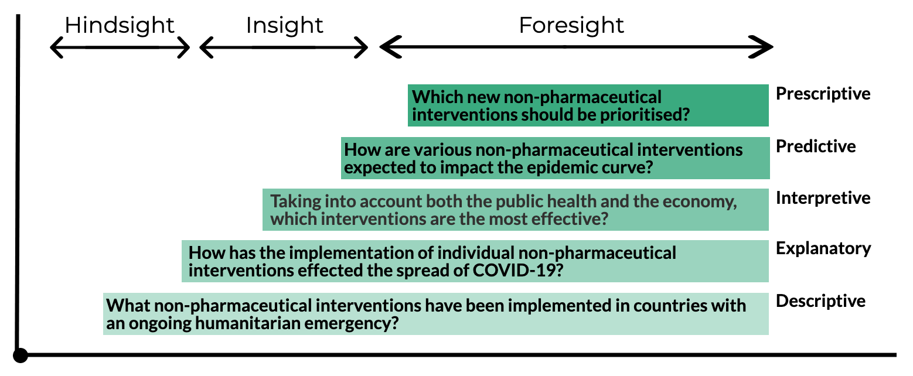

The Art of Good Data Questions
Created by OCHA's Centre for Humanitarian Data / @humdata
Press right on your keyboard or swipe left to navigate.
“If I had an hour to solve a problem and my life depended on the solution, I would spend the first 55 minutes determining the proper question to ask, for once I know the proper question, I could solve the problem in less than five minutes.” - Albert Einstein
Good data-driven questions are at the heart of all data exercises. Questions drive our data collection, focus our analysis and shape our communication. In this session, we get back to basics to learn the art of good questions.
This session includes a series of slides to build your knowledge, and a short quiz to test your knowledge. The expected length of time to complete all segments is 10 minutes.
In this introductory session to formulating questions using examples from the COVID-19 pandemic, you will learn:
- Why we ask framing questions and why they matter;
- What makes a good framing question; and
- How framing questions shape analysis.
The Role of Questions
We Ask Questions to Frame & Collect
As Einstein noted, spending time on the questions makes the work easier of getting the data we need.
We formulate questions to frame our data exercises. These framing questions can be thought of as our research question. They help define the data we need and guide our entire process. Data-driven insight starts with good framing questions.
We also ask questions to collect data. These types of questions help us acquire the data we need to answer our framing question. How we ask these questions shape the answers we get and the resulting data. High quality data starts with good data collection questions.
Ask, Answer, Act
Clear questions both start and bind our data exercises. They are key to ensuring we acquire the data we need, unlock value and insight in that data, and use that insight to drive action. In short, ask, answer, act.
Every data exercise, whether a multi-sector needs assessment, assessing the effectiveness of community engagement activities, or creation of a COVID-19 dashboard is driven by a well-defined question, should start with a question we are trying to answer.
Questions Frame Data Exercises
A framing question is fundamental in any data exercise yet it remains am under-appreciated and overlooked part of the process. Why do framing questions matter?
- They give our data exercises direction and focus.
- They inform our actions and outputs at every step of the exercise.
- They keep data processes aligned to a common reference point, making sure we collect only the data we need and produce the type of analysis required to make decisions.
Good Questions Anchor & Clarify
Good questions anchor your data exercise and guide you in finding the answers you need to make data informed decisions. To do this well, questions should be:
- Specific enough to tell us what needs to be analysed, where, when and on what scale;
- Relevant to an objective and focused on what needs to be understood in order to make a decision;
- Comprehensive of everything that needs to be understood in order to make that decision. We do not want to be left still seeking answers; and
- Realistic, that, given data availability and resource constraints, what we want to know is possible to know?
Getting to the right question can take time, but is time well spent.
Asking the Right Question
The Role of Questions in Data Analysis
The question we ask shapes the analysis we do. The question you ask depends on many factors including the audience of the analysis, how the results of the analysis will be used, and the data, time and resources available to answer the question we've asked. There are different types, or stages, of analysis, each of which helps us answers different types of questions.
- Descriptive analysis asks what happened in the past.
- Explanatory analysis asks why something happened in the past.
- Interpretive analysis ask what is most salient or important.
- Predictive analysis asks what is most likely to happen in the future.
- Prescriptive analysis ask what we should do about it.
COVID-19 Framing Questions
These different types of analysis build on each other with the the more advanced forms of analysis often being more labour intensive and collaborative. This does not mean that in every case we should be aiming to do more andvanced forms of analysis. Sometimes knowing what happened is sufficient. The analysis we do should always follow from what we want to know. In other words, it should follow from the question we ask.
What Happened?
At times, when we look to data for an answer, we simply want to know what happened. These 'who, what, where, when & how many' type questions are descriptive. Descriptive questions ask us to compare and contrast data to identify patterns, trends, and anomalies or outliers. They help us explore and understand what has happened in the past.
- How many cases of COVID-19 have been reported?
- Are the numbers of cases increasing or decreasing?
Many of the COVID-19 dashboards have been designed to answer exactly these types of questions.
Descriptive Analysis
Descriptive analysis help users understand a topic and its various facets but does not attempt to provide an explanation or interpretation. For example, this interactive dashboard summerises and compares measures that governments have taken to slow the spread of COVID-19.
Why Did it Happen?
When knowing what happened is important but insufficient to support decision making, we may need more from our data than a summary. Explanatory questions lead the analyst to investigate causal relationships, identify underlying factors, and seek a deeper understanding of why something is happening.
We ask explanatory questions when we want to uncover associations, correlations, connections and relationships between various data points.
What is the Most Important?
Knowing how much, how many or what happened can serve as a foundation for when we need to know what is most important. Interpretive questions ask us to prioritise, rate or rank. We use these type of questions when we want to know what is essential and why. In short, they ask to interpret from an array of data what, where or who, we need to focus on.
A typical example of this type of question would be:
- In which countries is the situation the most severe?
This example question is asking to consider a number of factors that have been described, to judge or determine what countries are a priority or the most important.
What is Most Likely to Happen Next?
Predictive questions ask to extend current conditions to forecast future outcomes, to develop alternative futures or to identify triggers. These questions seek to anticipate what could happen next.
Within the COVID-19 context, this could mean developing predictive models to help better understand the expected scale or duration of the crisis (i.e. the total number of cases, severe cases and deaths) in specific locations. It could also mean developing models to assess how different response interventions can be expected to impact the epidemic curve.
Bringing it All Together
Using A Framing Question
Let's take the question: What are community perceptions about transmission of COVID-19? This is a descriptive question as we are seeking to summarise community perceptions. Our next step is to tease out the dimensions, indicators and measures that can be used to answer this question. This could include:
To improve your, questions, here are some actions you can take:
- Tie your questions to an objective. Why do I need to know this and what will I do with it?
- Make sure your questions include everything you need to know to act.
- Don’t be afraid to get specific. The more you know about the dimensions of the topic you are investigating, the more focused your data exercise will be.
- Be realistic in what you ask. We need to ensure that we keep our questions grounded in what is possible and must be known.
- Understand the answer your question will render and ask yourself if this is sufficient to act.
Getting Specific
We will often start a data exercise with a broad problem space, or concept, that we want to explore. It can be hard to know what data need to analyse that problem space. To better understand what data we need, we first need to define the different dimensions of the concept that we want to explore. We then need to determine the different indicators we can use to assess those dimensions. With these indiactors identified, it becomes easier to hone in on the specific data required to answer our question.
Going from Abstract to Concrete
The differences between dimensions, indicators and measures is not always clear. Depending on the complexity of the question, there may be no distinction. What is important in this process is to ensure that abstract concepts are clearly translated into concrete data points that can be measured. This is often done using an analytical framework: The Inform Risk Index uses the following dimensions to answer the question 'In which countries is the situation the most severe?'
Bringing It All Together
The answers we get from data exercises to drive action depend on the questions we ask. Better questions, get better answers.
To improve your, questions, here are some actions you can take:
- Tie your questions to an objective. Why do I need to know this and what will I do with it?
- Make sure your questions include everything you need to know to act.
- Don’t be afraid to getspecific. The more you know about the dimensions of the topic you are investigating, the more focused your data exercise will be.
- Be realistic in what you ask. We need to ensure that we keep our questions grounded in what is possible and must be known.
- Understand the answer your question will return and ask yourself if this is sufficient to act.